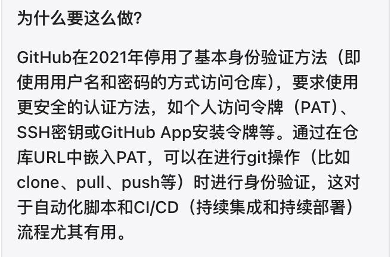

使用 Hexo & GitHub page 搭建个人网站
1 安装
按照官方文档指示安装即可
- Node.js
- Git
- Hexo
2 建站
$ hexo init <folder>
$ cd <folder>
$ npm install然后简单了解文件夹目录，注意public文件夹是后期自动生成的。
暂时还不知道是否需要手动调整。
3 配置-更换主题
Hexo Theme: Minima v1.0 is Officially Released (adisaktijrs.github.io)
照搬 Theme Configuration 前部分
4 创建存放 GitHub page 的仓库
创建 GitHub Pages 站点 - GitHub 文档
存储库命名为：<user>.github.io
5 部署到 GitHub page
因为这是第二次试图部署（悲）可以在被报错信息攻击前提前绕过错误。
如果是初次设置SSH密钥，请直接询问gpt：如何在github上设置ssh key
一个未解决的问题是不会用git，不知道怎么分离写作分支和部署分支，配置文件里暂时设置的是main。
另一个问题是，不知道是否必需公开 GitHub 仓库才能使用page。Hexo server 的运行在这里又是否是必需？不清楚原理，有很多问题
6 修改Theme配置内容
给自己的初版留个纪念

7 图片解析
这里其实还是个蛮头疼的地方，想要网站里图片正常显示，在Typora的编辑器里，就看不到图片了……暂时还没有解决这个问题。

而在图片显示的部分，还有一个小插曲。我在第二次创建项目的时候，头昏脑胀地改了permalink的内容（也可能是我以为我改了，总之最后删成了只剩:title/）
此时开启_config.yml文件中的选项，自然无法起效。

基础配置的部分到此暂结，之后在另一篇文章里补充一点跟博文写作相关的内容。
— Jun 28, 2024
Search
Made with ❤ and at Earth.